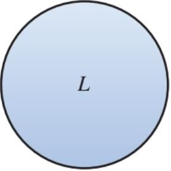
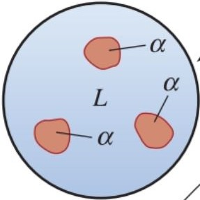
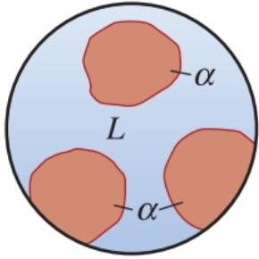
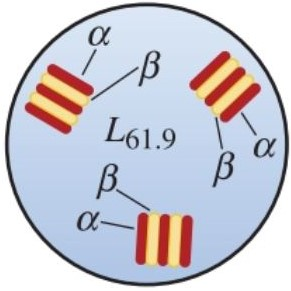
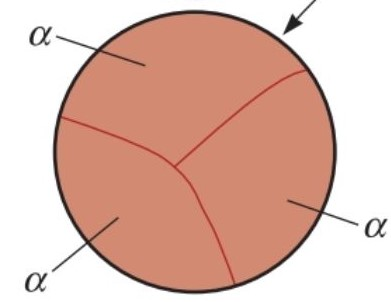
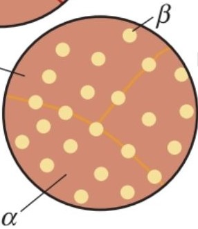
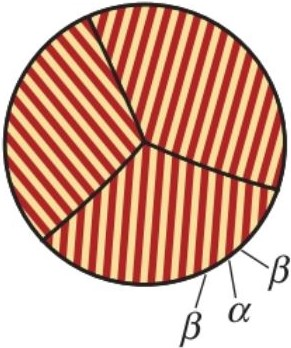
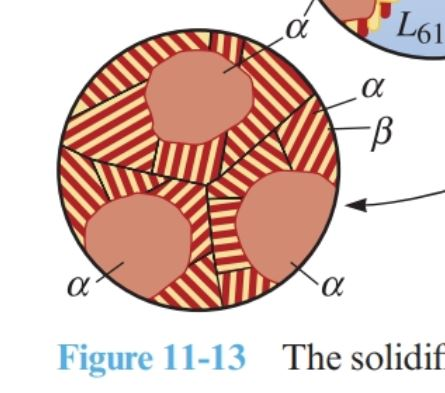

Visual study tool for how Pb-Sn microstructures change during cooling
Credit: Microstructure images and supporting material derived from Megan Dawkins (Spring 2018).
Follow the progression from liquid to two-phase regions to the final solid structure. Use these images to connect the Pb-Sn phase diagram to what is physically happening in the alloy during cooling.

At sufficiently high temperature, the alloy is fully liquid and no solid microstructure has formed yet.
Source adapted from Megan Dawkins (Spring 2018).

As the alloy cools into a two-phase region, primary α begins to form while liquid still remains.
Source adapted from Megan Dawkins (Spring 2018).

Further cooling increases the amount of α while reducing the remaining liquid fraction.
Source adapted from Megan Dawkins (Spring 2018).

At the eutectic composition and eutectic temperature, liquid transforms into α + β simultaneously.
Source adapted from Megan Dawkins (Spring 2018).

In the α single-phase region, the structure is fully solid and consists only of the α phase.
Source adapted from Megan Dawkins (Spring 2018).

Below the eutectic temperature, many compositions produce a final two-phase α + β microstructure.
Source adapted from Megan Dawkins (Spring 2018).

This image highlights the fine eutectic mixture that forms when the eutectic reaction occurs.
Source adapted from Megan Dawkins (Spring 2018).

A hypoeutectic alloy typically forms primary α first, followed by a eutectic mixture in the remaining regions.
Source adapted from Megan Dawkins (Spring 2018).
Study these images in sequence: start above the liquidus, enter a liquid plus solid region, and then identify the final microstructure after crossing below the eutectic temperature.